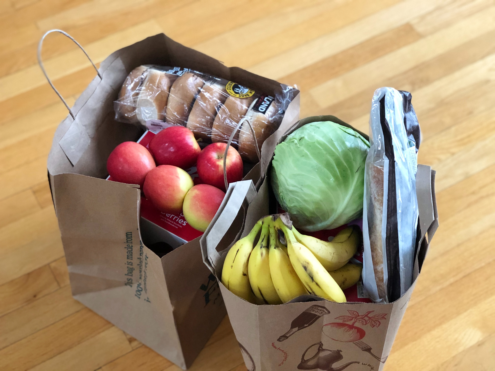

FooDiary
Group project for Higher Education Course POLI.DESIGN, 2019
Problem and goal
We worked in the reference framework of Italian supermarket. In particular, we collaborated with a big Italian large-scale retail trade. It has had a website since the years 2000, in which customers can do the shopping online or they can consult the offers’ flyer or the current rewards catalog. The website has usability problems so it needs some changes to be more user-friendly and we come into play!

Process and solution
We carried out the steps that are typical of the User Experience Design process.
- We created personas. Our personas was "Lucrezia: A creative, careful and responsible mum".
- We made the customer journey map to try to understand how the client experience would change with the redesign of the site.
- We made user stories thanks to which we developed our new concept: "Customizable food agenda".
- After we did some benchmark, we began rapid prototyping the new part of the website and we made the user flow.
- We made the mockup, using Sketch, InVision and Craft.
- Finally, we carried out the A/B test of the two homepage version.